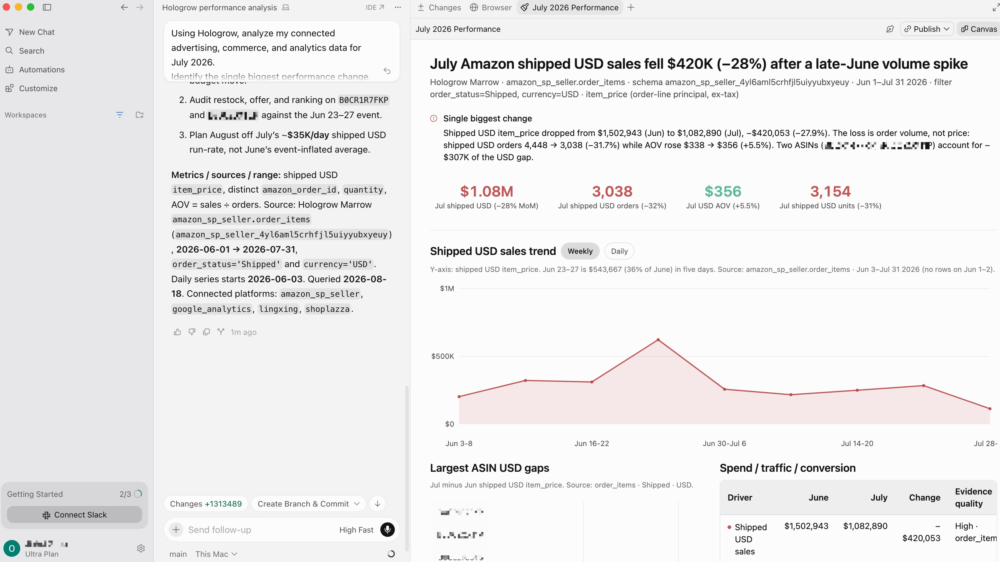

$120,000 → $108,000 shipped item revenue
Same currency, status and complete periods
HOLOGROW + CODEX
Turn an Amazon sales question into a report your team can use again. Hologrow supplies synced commerce and marketing data; Codex helps you build the charts, calculations and review workflow around it.

View full imageFor analysts and teams building their own reporting tools
01 / SETUP
Prepare a source in Hologrow, then authorize Codex in the desktop app. The walkthrough introduces the data connection; the cards below cover the Codex-specific steps.
Connect the relevant store and ad accounts in Integrations. In Data Explorer, check the available tables and dates before asking for a monthly comparison.
In the desktop app, open Settings → Plugins → Add → Add MCP server. Name it Hologrow, choose Streamable HTTP and use the server URL below. Leave token and header fields empty.
Save, open the MCPs tab and choose Authenticate for Hologrow. Complete authorization, then ask Codex to list connected platforms before building your report.
https://mcp.hologrow.ai/mcpFind and load the Hologrow MCP tools if necessary. Then call Hologrow’s list_platforms tool once. Do not call any other Hologrow data tool or any other external service.
Source authorization and AI workspace permissions are required. Initial sync can take time. The Arcade shows the common Amazon connection, not a separate recording for each client.
02 / FROM QUESTION TO OUTPUT
Start with shipped orders, separate volume from price, then make the calculation easy to inspect. This example shows the structure of a reusable monthly report.
BUSINESS REVIEW
In this illustrative report, shipped sales fell 10% while average order value held at $120. Keep both the chart and the calculation in the report so the team can investigate the volume change.
Save metric definitions, filters and query dates next to each chart. A colleague should be able to follow how the number was produced.
Illustrative figures, not a live query. Shipped item revenue is not profit or a bank reconciliation.
The same number can mean different things in different tables. Check the source and definition together.
Same currency, status and complete periods
Count orders once across item rows
Review product mapping before adding other stores
Save metric definitions, filters and query dates next to each chart. A colleague should be able to follow how the number was produced.
Compare affected ASINs with available sales-and-traffic and inventory data. Add Amazon Ads only when the relevant advertising account is connected.
Ask Codex to adapt the report to another period and flag incomplete coverage before recalculating. Publishing or scheduling the dashboard is a separate setup.
Suggested checks. Your team decides what to change.
03 / WHY HOLOGROW
A useful Codex project needs more than a one-off export. Give it a maintained data layer and inspectable definitions.
PREPARING DATA YOURSELF
WITH HOLOGROW
04 / CONNECTED DATA
Use schema names and business keys to choose the right report grain. A table row may represent an order item, a campaign day or a website event.
Orders and sales trends for monthly dashboards.
Vendor business context kept separate from Seller revenue.
Advertising cost and attributed sales beside store performance.
Campaign and keyword metrics for custom marketing views.
Site traffic to extend the report beyond marketplace orders.
Store orders and products for cross-channel reports.
Availability depends on authorization and report coverage. Shopify, Meta Ads, Amazon DSP and Lingxing ERP coverage is expanding; check your account before relying on them.
05 / TRY ASKING
Copy a prompt and add your account, marketplace and reporting dates. Each question depends on the relevant source being available.
Build a monthly business report from available Hologrow data. Include metric definitions, comparison periods, source tables and a missing-data checklist before drawing conclusions.
Create a weekly Amazon shipped-sales chart and a product contribution table. Preserve the order-status and currency filters and expose the underlying calculations.
Design a report comparing Google Ads spend with store revenue by week. Keep ad attribution and store revenue separate, and list the mappings needed for a closer comparison.
06 / SECURITY & CONTROL
Authorize the data connection and keep account operations under your control.
Hologrow stores source connection credentials encrypted. Access follows the Hologrow user who authorizes the AI connection.
Analyze synced records without changing bids, budgets, listings or orders through Hologrow. Review AI conclusions before acting.
Manage and revoke the client’s authorization in AI Platforms when you no longer want it to access your data.
Your AI client and model provider have their own permissions and data policies. Hologrow’s read-only boundary applies to the tools it provides.
07 / QUESTIONS, ANSWERED
Connection details, practical workflows and what to verify before your first analysis.
It gives Codex read-only access to your synchronized commerce and marketing data. You can ask Codex to inspect available tables, analyze changes and create reports or tools using that data.
No. Hologrow hosts the MCP service. Add its Streamable HTTP endpoint in the desktop app and complete authorization; source accounts still need to be connected in Hologrow.
The documented Codex desktop flow uses Authenticate after the MCP server is saved. Leave bearer-token and header fields empty for that flow. Follow the full guide if your client configuration differs.
You can ask Codex to create report files, charts or an analysis tool in your workspace. Hologrow supplies the data; the client and project determine the artifact format and how it is hosted.
Not just because the MCP connection exists. Hologrow synchronizes source data, while dashboard refresh, scheduling and deployment need their own configuration and a running client or application.
Require source tables, date ranges, currency, row grain and filters in the output. Check distinct-order counts separately from item rows, and review missing dates before accepting comparisons.
No. Hologrow MCP reads synchronized data and does not edit bids, budgets, listings or orders. Any local file changes made by Codex are governed separately by your client permissions.
Workspace rules may require an owner or admin to add the MCP connection before members can use it. Check the Codex guide and your workspace permissions before rollout.
Connect the data first. Then build the view your team needs.